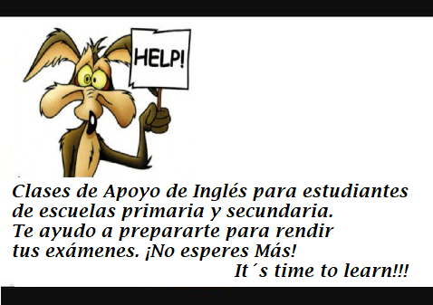

Experiencia laboral

Tutora de Inglés
- 1999 - 2021
Clases de apoyo de Inglés a niños y adolescentes en edad escolar; preparación a exámenes. Pilar/ Tortuguitas, Bs.As.
Empresa Plástica - Recepcionista/ Secretaria
- Junio 2012 - Sept. 2015
Tareas desempeñadas como Recepcionista, Administrativa y Secretaria de todos los sectores que conforman la Empresa. Parque Industrial Pilar, Bs. As.
Hotel Familiar y de descanso - Recepcionista
- Sept. 2003 - Junio 2011
Tareas de Recepción de pasajeros y Administración del Hotel.